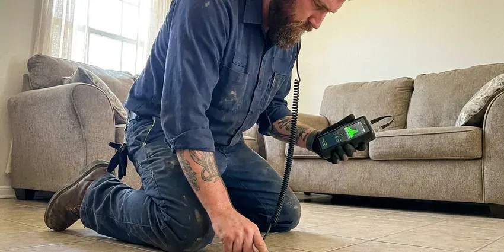

Residential Plumbing Service in South Gate, CA
Homeowners in South Gate, CA count on FKM Plumbing for fast and professional residential plumbing service. We ensure your home's plumbing systems run smoothly and efficiently.
- Same-Day Home Plumbing Service
- Licensed and Insured Plumbers
- Licensed Plumbers
- Local South Gate Experts

Get a Licensed Home Plumber at Your Door in South Gate, CA.
Our plumbers arrive with stocked trucks so most repairs are finished on the first visit.
Your Go-To for Residential Plumbing Service in South Gate, CA
When you need residential plumbing service in South Gate, CA, FKM Plumbing is your trusted partner. Our team specializes in maintaining and repairing the plumbing systems found in homes throughout the area, from older properties to new construction, always following local building codes. Plumbing work in Southern California follows the state plumbing code, which is based on the Uniform Plumbing Code with state amendments.
Our expertise includes:
- Accurate leak detection and repair.
- Water Heater Installation & Repair
- Faucet, toilet, shower valve and garbage disposal repair and installation

Additional Plumbing Maintenance Services in South Gate, CA
Our maintenance and specialty plumbing services in South Gate, CA catch small problems before they become emergencies.


Customers
Why Choose FKM Plumbing for Residential Plumbing Service in South Gate, CA?
Our plumbers are not just technicians, they are craftsmen dedicated to providing the highest standard of residential plumbing service. We use only quality parts and proven methods so your home's plumbing operates reliably.
- Transparent Pricing, We provide clear, upfront estimates before any work begins, so you know exactly what to expect without hidden fees.
- Upfront Pricing, You approve a flat price before we start, so there are no hidden charges.
- Workmanship Warranty, Our repairs come with a written warranty on parts and labor.
Citywide Coverage
Whether you live in a condo, townhome or custom house, our team covers all of South Gate and the surrounding communities. Evening and weekend appointments are often available.
Experienced Team
Our plumbing team brings broad experience to every residential plumbing service job, handling everything from routine maintenance to complex system overhauls. They are familiar with the various types of plumbing systems found in Southern California homes, including PEX, copper and PVC piping.
Safety-First Approach
Safety and code compliance come first in every residential plumbing service we perform. We make sure all work meets or exceeds Southern California building codes, protecting your home and family from potential hazards.
Trusted Certified South Gate Plumbing Services Professionals
At FKM Plumbing, we take pride in providing licensed, certified plumbing services throughout South Gate, CA. Backed by leading industry credentials, our experienced plumbers combine technical skill with genuine customer care. Whether it is repair, installation, or maintenance, we follow strict safety and quality standards to deliver long-lasting results you can trust.
Call Us Now PHCC Plumbing Contractor Recognition
PHCC Plumbing Contractor Recognition Better Business Bureau (BBB) Accreditation
Better Business Bureau (BBB) Accreditation Angi Certified Pro
Angi Certified Pro ISO 9001 Quality Management Certification
ISO 9001 Quality Management CertificationFull-Service Residential Plumbing Services in South Gate, CA
Leak Repair and Slab Leak Service in South Gate
Many homes sit on concrete slabs, so a hidden leak under the floor can run for weeks before you see it. Warm spots on tile, a running meter or a spike in your water bill are typical clues. We use acoustic listening equipment, thermal imaging and pressure tests to pinpoint the leak. Then we repair it directly, reroute the line overhead or recommend a repipe when leaks keep returning.

Pipe Repair and Repiping in South Gate, CA
Older homes often have galvanized or polybutylene pipes prone to corrosion and leaks. Repiping with PEX or copper is a popular upgrade across Southern California, often done to fix low pressure and repeated slab leaks. Our residential plumbing service provides expert pipe repair for isolated issues or full home repiping using durable materials like PEX or copper. We assess your existing system, recommend the best long-term solution and complete the repipe with minimal disruption, providing a reliable and safe water supply for decades to come.
Repiping and Pipe Replacement in South Gate
Homes with failing polybutylene, corroded galvanized or pinhole-prone copper often need a repipe. We replace supply lines with PEX or copper, routing new lines through the attic and walls to avoid breaking the slab. Most homes are repiped in two to four days with water restored each night. We patch the drywall openings so the house is ready for paint.
Sump Pump and Basement Drainage in South Gate
Protecting your basement from flooding is important, especially during heavy rain seasons. Our residential plumbing service includes sump pump installation, repair and maintenance. We confirm your sump pump is properly sized and functioning correctly, and can also install or service basement drainage systems to divert water away from your foundation, keeping your South Gate home dry and secure.
Water Softener & Filtration in South Gate
Around South Gate, flushing the water heater yearly and cleaning aerators keeps mineral buildup from cutting flow and efficiency. Hard water leads to mineral buildup in pipes and appliances. FKM Plumbing installs and services high-quality water softeners and whole-home filtration systems from trusted brands like Kinetico and Pelican Water. These systems protect your plumbing, extend the life of appliances and improve the taste and quality of your tap water. We assess your home's water hardness and recommend the most effective solution, delivering strong performance and efficiency for your needs.
Emergency Plumbing Repair in South Gate
When a pipe bursts or a drain backs up unexpectedly, you need immediate help. Our emergency residential plumbing service in South Gate is available to address urgent issues like severe leaks, overflowing toilets or complete loss of water. We arrive quickly, assess the situation and make effective repairs to minimize water damage and restore function. Don't let a plumbing emergency escalate, call us for rapid response.
Toilet Repair & Installation in South Gate
A running toilet can waste hundreds of gallons of water a day, driving up your utility bills in South Gate. We diagnose and repair all common toilet issues, including constantly running water, weak flushing, clogs and leaks at the base. Our technicians can replace faulty flappers, fill valves, wax rings or entire toilet units with modern, water-efficient models. We work with all major brands, making sure of a proper seal and flush every time. We also confirm new installations are level and securely bolted to your bathroom floor.

Drain Cleaning & Clog Removal in South Gate, CA
Clogged drains are a common nuisance in South Gate homes, often caused by grease, hair and soap scum buildup. We use professional-grade tools like augers, hydro-jetting equipment and drain snakes to clear even the toughest blockages in kitchen sinks, bathroom drains and main sewer lines. Our methods are safe for your pipes and effective at removing obstructions that DIY solutions can't handle. We can also inspect lines with cameras to identify recurring problems, such as tree root intrusion or collapsed pipes, which are sometimes a factor in older South Gate properties.
Fast Residential Plumbing Service Near Me in South Gate, CA
When you search for 'residential plumbing service near me' in South Gate, CA, FKM Plumbing is your trusted local choice. Our strategically located teams can reach your home quickly, providing prompt service whether you're dealing with a minor drip or a major emergency. We aim to be the go-to neighborhood plumbers.
Choosing a local plumber means getting service from someone who understands the specific needs of South Gate homes. We're familiar with the local water system, common building practices and environmental factors that affect plumbing systems here. For reliable residential plumbing service near me, FKM Plumbing is the proven choice.
FKM Plumbing at a Glance
- Fully licensed plumbing team covering South Gate, CA
- 24/7 emergency service with same-day scheduling
- Upfront, flat-rate pricing before work begins
- 4.8-star rated by 754+ Southern California customers
South Gate Map
South Gate Information
- Population
- 90,070
- Area codes
- 562/323/626
- Service area
- South Gate and communities within 40 miles
- Nearby
- Lynwood, Florence-Graham, Downey, Compton
Dependable residential plumbing service is important for homes in South Gate, CA to handle issues like hard water scaling, foundation movement that stresses pipes and the risks of extreme temperatures.
Expert Services
Trust our professionals for reliable FKM Plumbing solutions in South Gate, CA.
Our Specialized Plumbing Services in South Gate, CA
At FKM Plumbing, we provide a complete range of plumbing services across South Gate, CA. From leak detection to full system installations, our team ensures fast, precise, and affordable service for both residential and commercial properties. Explore our core services below:


How Our Residential Plumbing Service Process Works in South Gate, CA
Getting your home plumbing fixed should be simple, so we keep the process transparent from start to finish.
Request a Quote
Contact us at (213) 871-0701 to describe your plumbing issue or service need. Our helpful team will gather initial details and schedule a convenient appointment for an on-site assessment.
On-Site Assessment
A certified plumber will visit your South Gate home to thoroughly inspect the problem, diagnose the cause and discuss the best solutions with you. We use modern tools for accurate diagnostics.
Clear Proposal
You'll receive a transparent, written estimate for the residential plumbing service, outlining all costs and recommended work. We ensure you understand everything before any work begins.
Frequently Asked Questions About Residential Plumbing Service in South Gate
The cost for residential plumbing service in South Gate varies widely depending on the type and complexity of the job. Minor repairs like a leaky faucet might range from $150 to $350, while a water heater installation could be $1,200 to $3,500. Major projects like slab leak repair or whole-home repiping can cost several thousand dollars. We always provide a detailed, upfront quote after diagnosing the issue.
Yes, FKM Plumbing stands behind the quality of our residential plumbing service. We offer full warranties on both parts and labor for all our repairs and installations. Specific warranty details will be provided with your service agreement, giving you peace of mind.
A plumber is a licensed professional who can handle all aspects of water supply, drainage, heating and gas systems in a home, including repairs, installations and inspections. A drain cleaner typically specializes only in clearing clogs. FKM Plumbing provides full-service plumbing, so we can address the root cause of drain issues and more.
For significant plumbing work like water heater replacement, sewer line repair or new gas line installations in South Gate, CA, a permit is usually required by local code. FKM Plumbing handles all necessary permit applications and makes sure all work complies with local regulations, saving you time and hassle.
We recommend having your water heater inspected annually, especially where hard water can speed up sediment buildup. Regular inspections can extend the lifespan of your unit, improve efficiency and help identify potential issues like anode rod corrosion or pressure relief valve problems before they become major repairs.
Warm spots on the floor, the sound of running water, a spinning meter with everything off and unexplained high water bills are common signs. Cracks in flooring or mildew smells can also point to a slab leak.
We install and repair Moen, Delta, Kohler, American Standard, Pfister and TOTO fixtures. We can also install fixtures you have already purchased.
While minor tasks like tightening a loose connection might be DIY-friendly, we usually advise against tackling complex plumbing repairs yourself. Incorrect repairs can lead to more significant damage, costly leaks and even safety hazards, especially with gas lines or water heaters. Professional service ensures the job is done correctly and safely.
What People Are Saying About Our Plumbing Experts?

Mark T.
When our office needed drain cleaning, FKM Plumbing provided quick, reliable service. The plumber arrived on time and made sure every drain flowed perfectly before leaving. Very satisfied.
Drain Cleaning · Downey, CA
Daniel K.
A pipe burst at 11 pm and they actually answered. The plumber showed up within the hour, shut everything down, and had us back to normal the next morning. Could not ask for more.
Emergency Plumbing · Lynwood, CA
Sofia M.
Two new toilets installed in one visit, no mess left behind, and the tech even adjusted a faucet he noticed was dripping. Fair pricing and really friendly.
Toilet Installation · Bellflower, CA
Robert G.
The trenchless sewer replacement saved our front yard. They walked us through the camera inspection footage first so we knew exactly what we were paying for.
Sewer Line Replacement · Lynwood, CAJames P.
Our commercial plumbing system had a leak under the sink, and FKM Plumbing handled it professionally. The plumbers arrived quickly and restored everything without disruption to our customers.
Commercial Plumbing · South Gate, CA
Patricia H.
We had a slab leak that two other companies could not find. FKM Plumbing located it in under an hour, explained our options, and the price matched the quote to the dollar.
Slab Leak Repair · Lynwood, CA